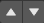

Controller Editing
Controller Column with a typical sensor
UPBGE controllers can be set up and edited in the central column of the Logic Bricks Panel. This page describes the general column controls, those parameters which are common to all individual controller types, and how different states for the objects in the logic system can be set up and edited.
The image shows a typical controller column with a single controller. At the top of this column, and for sensors and actuators, the column heading includes menus and buttons to control which of all the controllers in the current Game Logic are displayed.
Column Heading
Controller Column headings
The column headings contain controls to set which controllers appear, and the level of detail given, in the controller column. This is very useful for hiding unnecessary controllers so that the necessary ones are visible and easier to reach. Both these can be controlled individually.
Controllers
- Show Objects
Expands all objects.
- Hide Objects
Collapses all objects to just a bar with their name.
- Show Controllers
Expands all Controllers.
- Hide Controllers
Collapses all Controllers to bars with their names.
It is also possible to filter which controllers are viewed using the three heading buttons:
- Sel
Shows all controllers for selected objects.
- Act
Shows only controllers belonging to the active object.
- Link
Shows controllers which have a link to actuators/sensors.
Object Heading
Object heading

Object list
In the column list, controllers are grouped by object. By default, controllers for every selected object appear in the list, but this may be modified by the column heading filters.
At the head of each displayed object controller list, three entries appear:
- Triangle button

Shows which states are in use for the object (toggle). Detailed description of the marked panel is given in States.
- Name
The name of the object.
- Add Controller
When clicked, a menu appears with the available controller types. Selecting an entry adds a new controller to the object. See Controllers for a list of available controller types.
Standard Controller Parts
The controller heading is standard to every controller.
Controller parts
- Triangle button
Collapses the sensor information to a single line (toggle).
- Controller Type menu
Specifies the type of the controller.
- Controller Name
The name of the controller. This can be selected by the user. It is used to access controllers with Python; it needs to be unique among the selected objects.
- Preference Button
If on, this controller will operate before all other non-preference controllers (useful for start-up scripts).
- Movement buttons 
Move the sensor up or down over other sensors within the column.
- Checkbox button
When unchecked the controller is deactivated, no pulses will be sent to the connected actuators. Very useful to check different logics without unlink or delete the controller.
- X Button
Deletes the controller.
- Visible State
Sets the designated state for which this controller will operate.